《追色手记01》学习资料
泽村洋兵日系胶片灰调色：从仿色思路到 Lightroom 曲线实操
视频标题 | 【追色手记01】调色教程来了！泽村洋兵日系胶片灰的秘密，原来都藏在这个工具里！ |
作者 | 摄影师聿铭 |
时长 | 约 10 分 14 秒 |
来源 | https://www.bilibili.com/video/BV1NS4y1x7GK/ |
整理日期 | 2026-05-22 |
说明：本文根据视频音频转写、画面截取与内容校对整理，保留学习所需的方法、步骤和关键截图，不包含逐字稿。
泽村作品参考截图
以下为视频中展示的泽村洋兵作品和对照画面截图，用来观察“内容、影调、色调”的共性。它们不是原图文件，画面中可能保留视频字幕、直方图或取色标注。
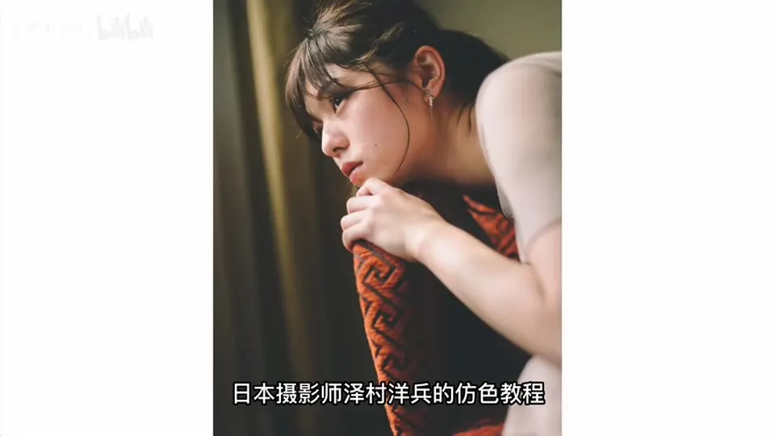 窗边人像：暗部柔、肤色暖 | 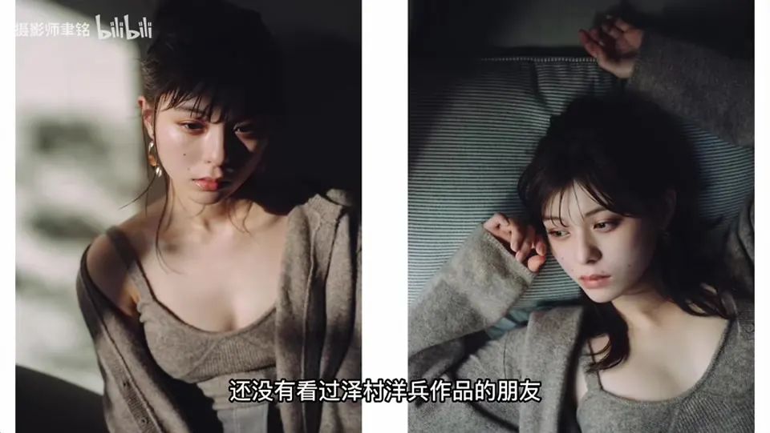 两张人像：低饱和与柔对比 |
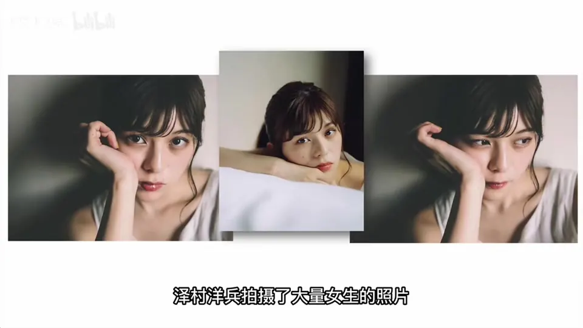 三张人像：题材与氛围统一 | 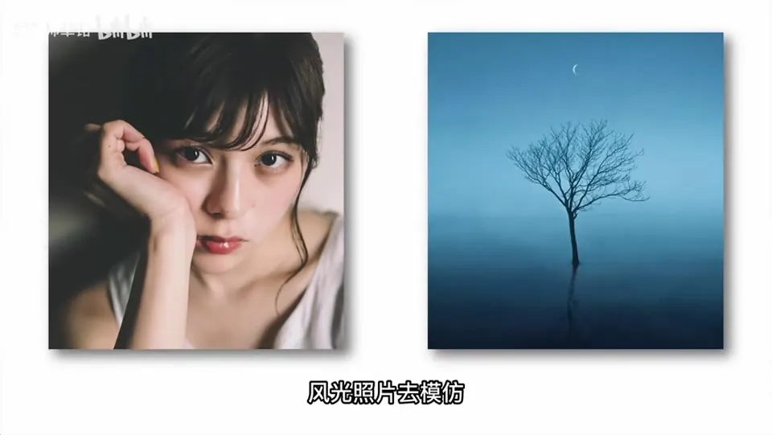 内容差异：人像不能硬套风光 |
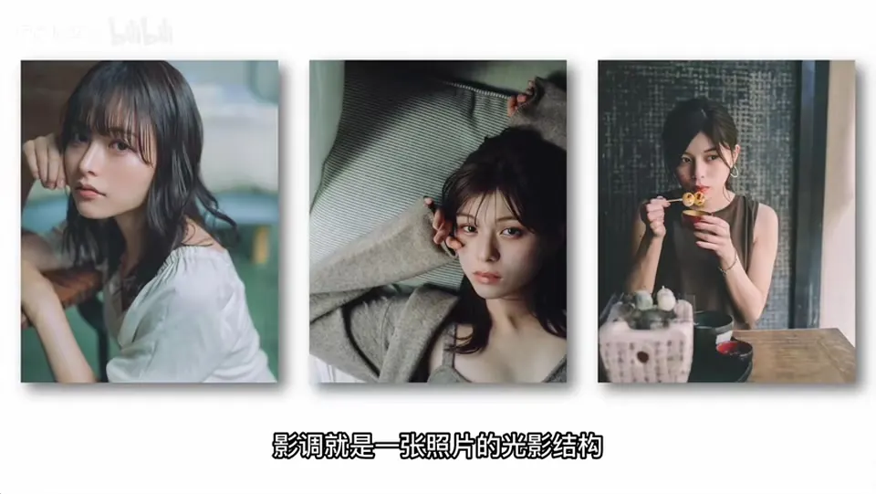 影调例子：暗亮面积明显 |
直方图对照：两端缺失 |
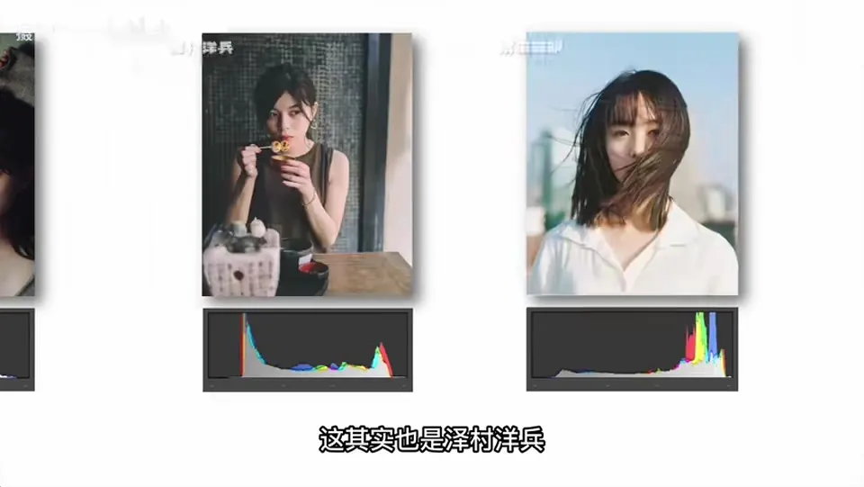 与高亮小清新风格对比 | 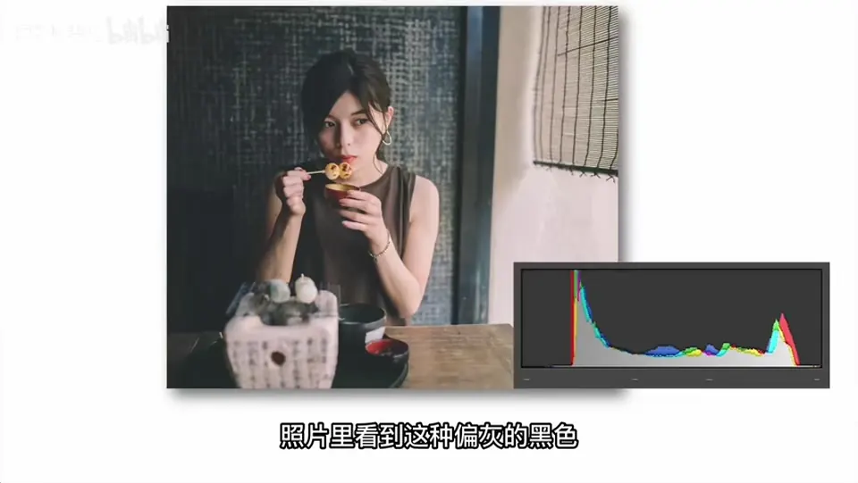 单图观察：黑位不死 |
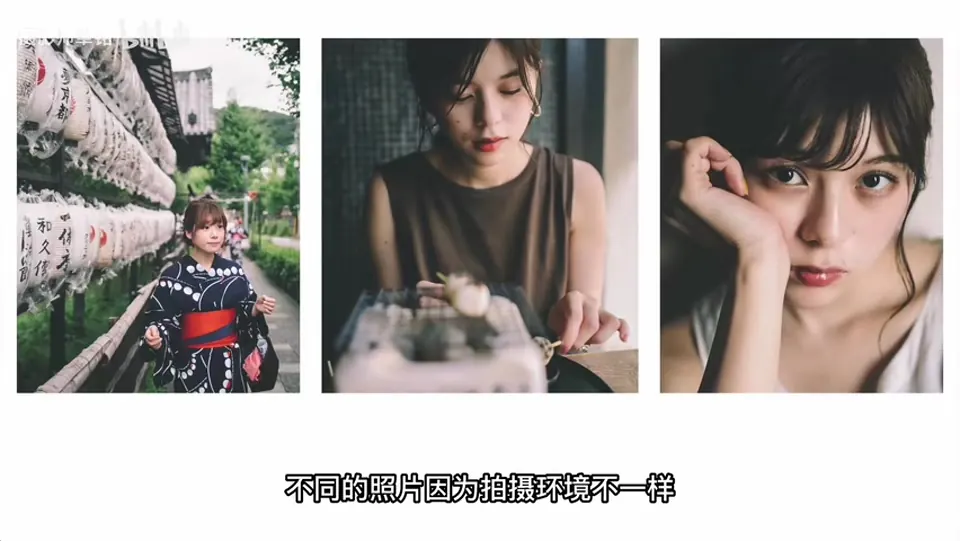 不同环境中的共同色彩倾向 | 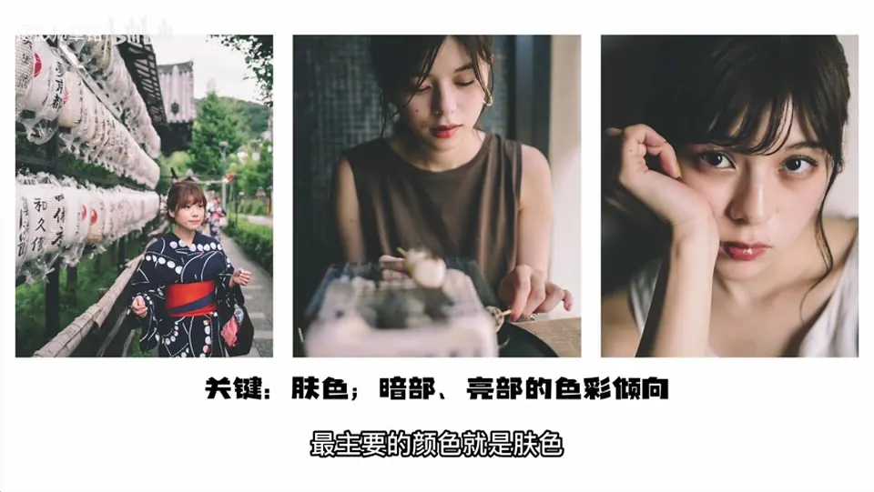 肤色、暗部、高光的整体关系 |
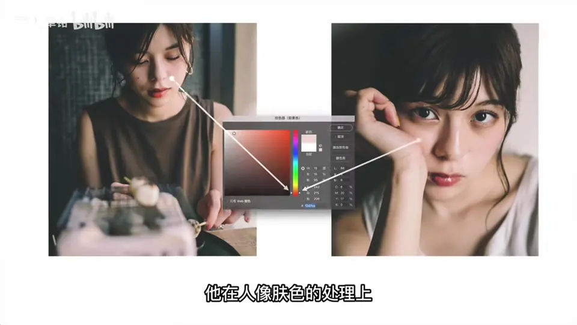 肤色取样：黄中带红 | 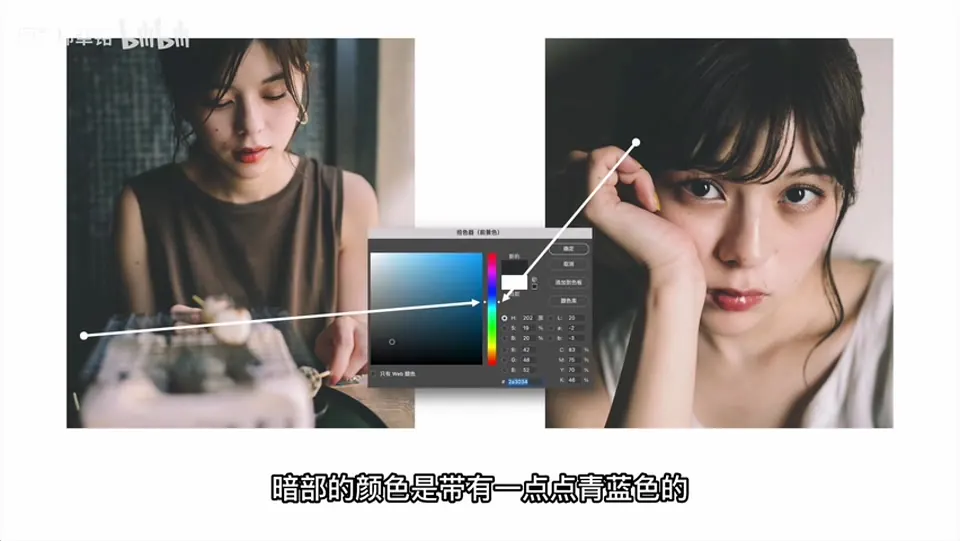 暗部/亮部取样：青蓝与暖色 |
一页速览
仿色前提 | 不要先抄参数，先判断：内容是否接近、影调结构是否一致、主色倾向是否类似。 |
影调核心 | 目标风格的直方图呈“中间低、两头高”，同时最暗端和最亮端缺失，形成日系胶片灰。 |
色调核心 | 肤色黄中带红，暗部偏青蓝，亮部偏红橙；整体低饱和、柔对比、黑白不死。 |
关键工具 | Lightroom 的“第五条曲线”是参数曲线；配合点曲线和 RGB 曲线，先定影调，再定色彩。 |
判断标准 | 最终不要只看单张图好不好看，要回看直方图、肤色、暗部、高光和参考图之间的关系。 |
学习目标
能用“内容、影调、色调”三层框架拆解一张参考照片。
理解胶片灰不是单纯降低对比度，而是通过曲线抬黑、压白、控制中间调来完成。
能区分参数曲线和点曲线：前者范围有限、过渡平滑，后者自由度高、适合塑造黑白端。
能用 RGB 曲线建立暗部青蓝、高光红橙、肤色黄中带红的整体倾向。
能用 HSL 和局部调整做最后的精修，而不是一开始就陷入细节滑块。
核心方法：先拆三件事
维度 | 看什么 | 在本片中的结论 |
内容 | 主体、题材、场景、拍摄时间是否接近。 | 人像作品要用人像练习，不能拿风光图硬套人像参考。 |
影调 | 光影结构与直方图形态。 | 暗部和亮部面积较多，最黑最白缺失，画面有灰而柔的胶片感。 |
色调 | 肤色、暗部、亮部各自偏向。 | 肤色黄中带红；暗部带青蓝；亮部偏红橙，整体饱和度克制。 |
Lightroom 实操流程
基础光影：先提曝光和阴影，让逆光人脸有信息；再压高光和白色色阶，防止亮部刺眼；最后稍加对比度，色温略往冷调微调。
校准定肤色：红原色色相向黄色轻推，让肤色带一点黄；绿原色色相向右约二十左右，让肤色透红。幅度要小，过量会脏。
参数曲线做自然对比：上提高光和亮色调，压暗暗色调和阴影。它比直接拉对比度更可控，过渡也更平滑。
点曲线塑造胶片灰：抬起最暗点，让纯黑消失；压低最亮点，让纯白缺失；中间调和高光主体尽量保持稳定。
RGB 曲线定色彩基调：红曲线让暗部偏青，并保护中间调肤色；绿曲线做类似 S 形的平衡；蓝曲线再把整体暖冷关系拉回目标状态。
HSL 精修具体颜色：红往橙、橙往红，嘴唇不过分抢眼，肤色保留红润；降低红、橙、黄、蓝、紫、洋红等饱和度；适当提亮暖色主体。
局部修正：用线性渐变或局部滤镜压亮部细节、提亮逆光脸部。最后再看直方图和参考图，不只看滑块数值。
工具速查表
工具 | 主要目的 | 本片操作 | 注意点 |
基础面板 | 先让素材进入可调状态 | 曝光/阴影上提，高光/白色色阶下压，对比度略增。 | 基础调整不是最终风格，只是给后续曲线留空间。 |
校准 | 快速影响整体色彩与肤色 | 红色偏黄，绿色向右让肤色透红。 | 幅度过大容易让肤色假、环境脏。 |
参数曲线 | 平滑增加整体明暗层次 | 高光/亮色调上提，暗色调/阴影压低。 | 适合大区域，不适合极端控制黑白端。 |
点曲线 | 制造胶片灰和黑白端缺失 | 黑场抬高，白场压低，局部恢复阴影。 | 抬黑太多会发灰，需用中间点拉回层次。 |
RGB 曲线 | 建立暗部、高光、肤色的色彩倾向 | 暗部青蓝，中间调保护肤色，高光偏暖。 | 单条曲线会偏色，三条曲线要一起看。 |
HSL | 精确收尾 | 红橙互相微调，降低高饱和色，提亮暖色主体。 | HSL 是精修，不应替代整体影调判断。 |
局部滤镜 | 修补局部过亮或过暗 | 压高光区域，提亮逆光脸部。 | 只处理破坏观感的局部，不要把画面修得太平均。 |
关键截图与讲解
图 01 | 00:34 | 仿色问题清单：先问自己到底在模仿什么。
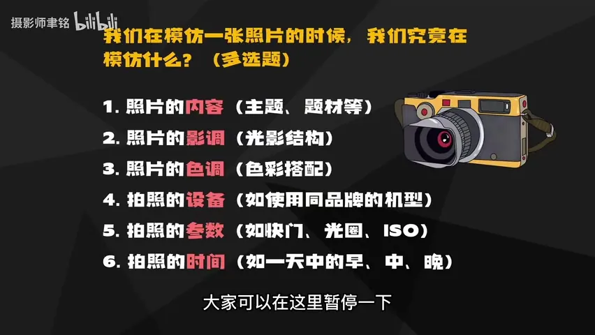
学习要点：作者把仿色拆成内容、影调、色调等因素，提醒不要从滑块开始。
图 02 | 01:08 | 用直方图识别影调结构。
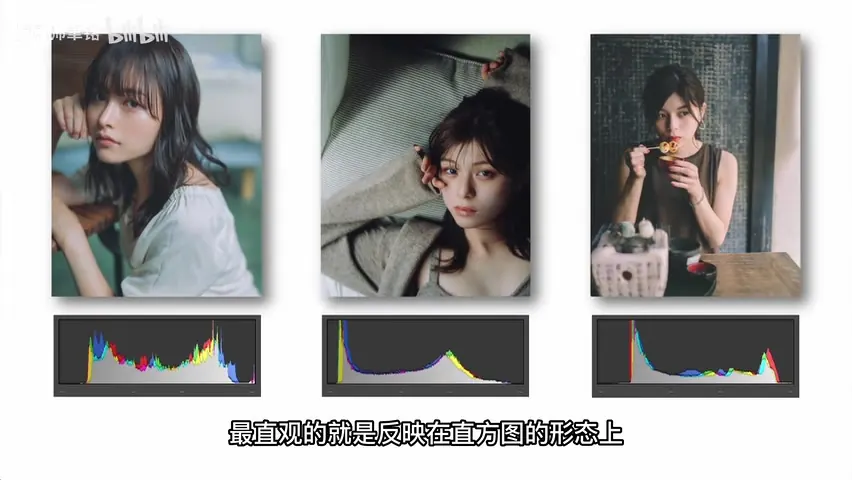
学习要点：参考图的暗部与亮部面积多，中间调相对少，是后面曲线调整的依据。
图 03 | 01:39 | 胶片灰的视觉来源：黑白端缺失。
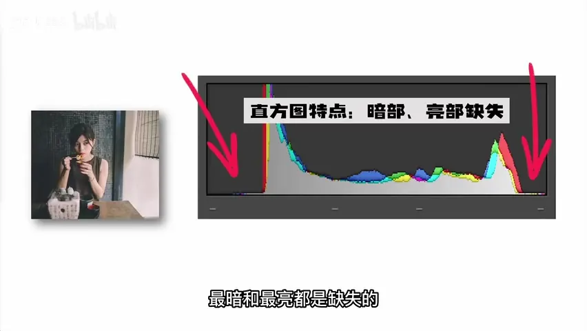
学习要点：最暗和最亮都不顶边，黑色不死、白色不炸，画面因此偏柔、偏灰。
图 04 | 02:18 | 色调拆解：肤色、暗部和亮部分开看。
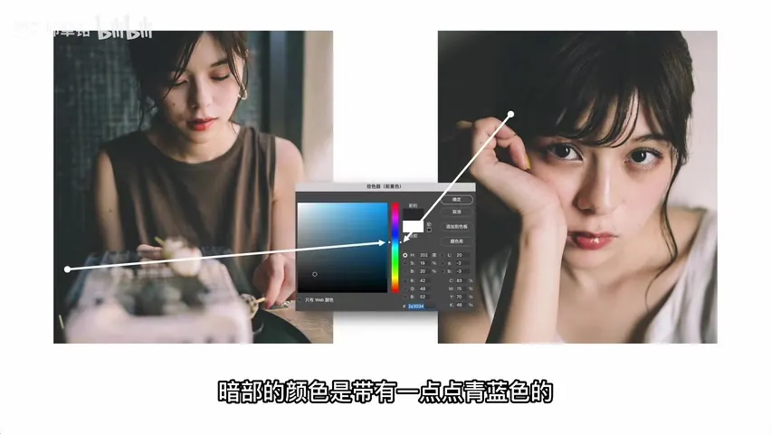
学习要点：肤色黄中带红，暗部带青蓝，亮部偏红橙，这是 RGB 曲线的目标。
图 05 | 03:10 | 基础调整：先救逆光主体。
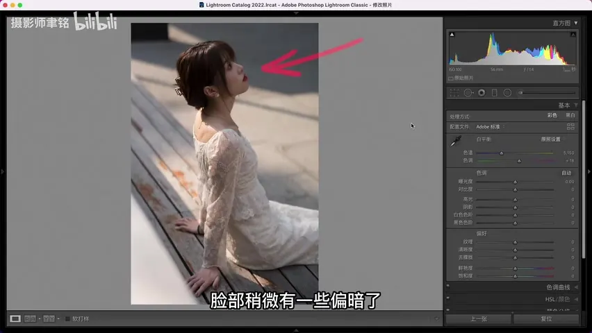
学习要点：提亮曝光和阴影，压住高光和白色色阶，再用对比度找回层次。
图 06 | 03:45 | 校准面板：先定整体肤色倾向。
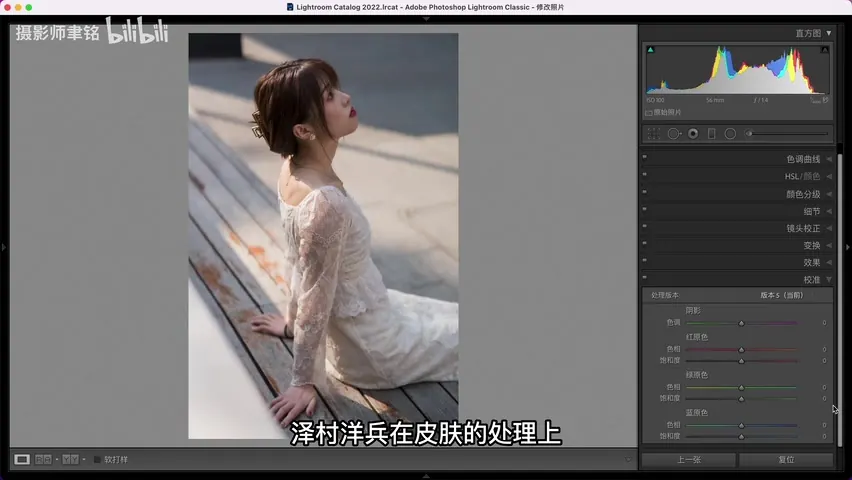
学习要点：红原色影响黄色感，绿原色向右会让皮肤更红润，但都要轻。
图 07 | 04:24 | 曲线工具的真正重点：参数曲线也是曲线。
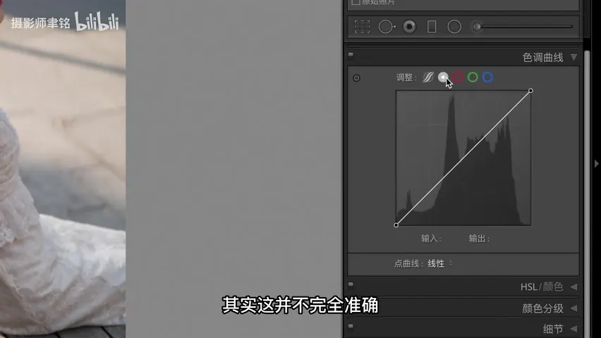
学习要点：参数曲线控制高光、亮色调、暗色调、阴影四个大区间，过渡平滑。
图 08 | 05:18 | 参数曲线：自然地加对比。
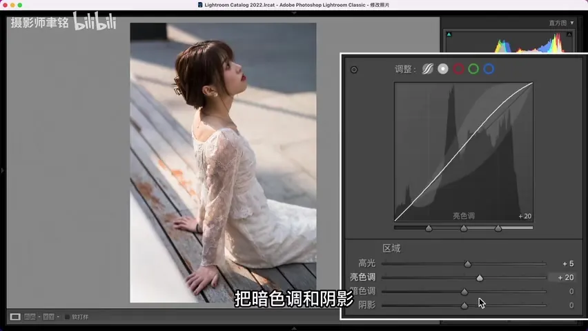
学习要点：比直接拉对比度更细，因为它能分别控制四个亮度区域。
图 09 | 05:59 | 点曲线：抬黑压白，做出胶片灰。
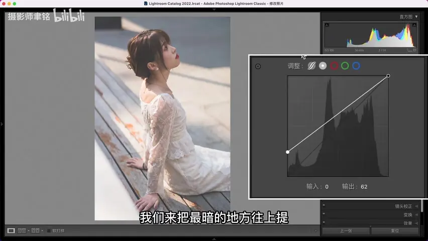
学习要点：抬起最暗点、压下最亮点，让直方图两端缺失，同时保持中间调稳定。
图 10 | 06:35 | 红曲线：暗部往青色走。
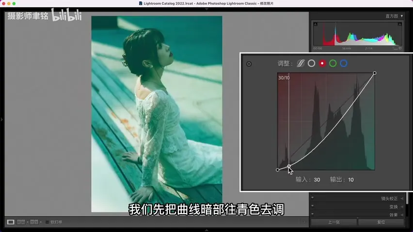
学习要点：降低暗部红色会带来青色倾向，中间调需拉回，避免肤色变青。
图 11 | 07:20 | 蓝曲线：平衡整体冷暖。
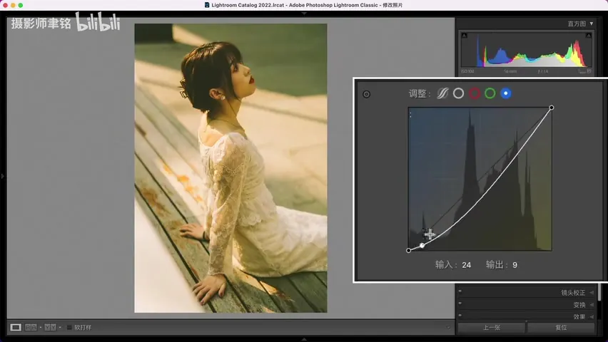
学习要点：RGB 曲线要联动观察，不能只看单条曲线的形状。
图 12 | 07:34 | HSL：进入精确颜色控制。
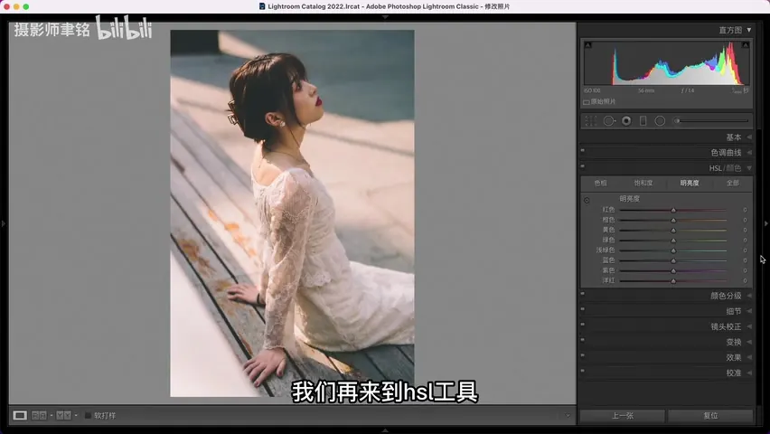
学习要点：红橙色相处理肤色和嘴唇，饱和度整体收敛，暖色明亮度可适度提高。
图 13 | 08:50 | 最终检查：直方图回到目标形态。
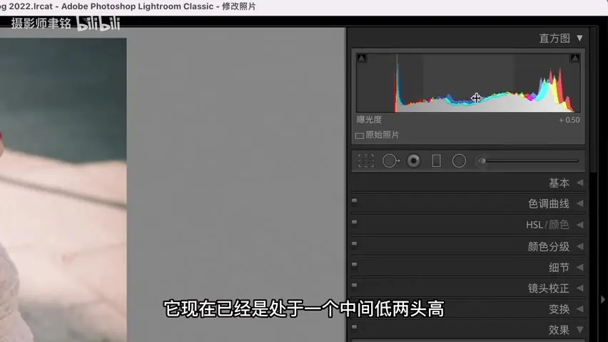
学习要点：中间低、两头高，并且暗部亮部缺失，说明方向与参考风格一致。
图 14 | 09:12 | 局部调整：压高光、提亮脸部。
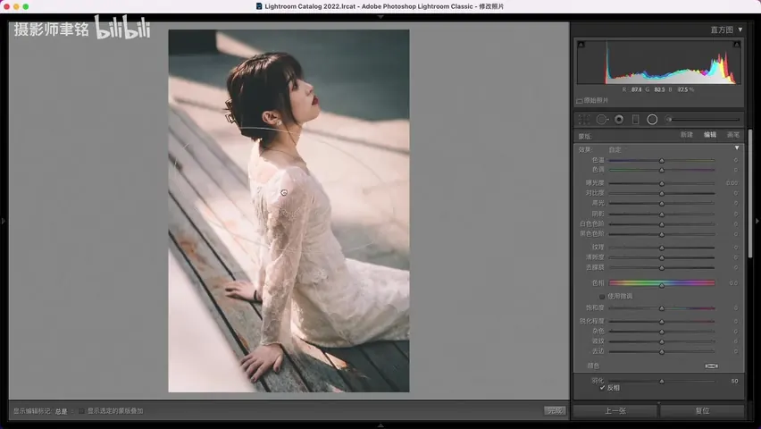
学习要点：最后处理局部问题，避免亮部没细节或逆光脸部过暗。
图 15 | 09:34 | 成片对比：不同环境也能靠影调和色调接近。
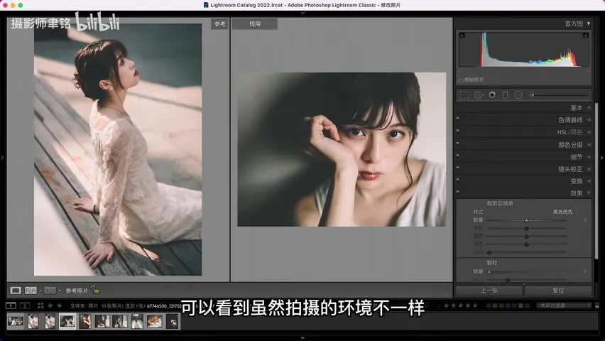
学习要点：仿色的目标不是复制场景，而是复现光影结构、肤色和暗亮部色彩关系。
练习任务
选一张逆光或侧逆光人像作为素材，再选一张泽村洋兵风格参考图。
先写下三项判断：内容是否接近、直方图是否接近、肤色/暗部/亮部各偏什么颜色。
只用基础面板和校准完成第一版，不急着动 HSL。
用参数曲线增加自然对比，再用点曲线抬黑压白，做出胶片灰。
用 RGB 曲线建立暗部青蓝、亮部暖色、肤色红润的整体关系。
最后再用 HSL 和局部工具解决具体问题，并保存前后对比图。
复盘清单
检查项 | 通过标准 |
内容 | 素材题材和参考图一致或足够接近，不靠调色强行改变照片类型。 |
影调 | 直方图接近“中间低、两头高”，黑白端没有硬顶边。 |
肤色 | 黄中带红，但不橘、不脏、不偏青。 |
暗部 | 有青蓝倾向但保留细节，不是一片死黑或脏灰。 |
亮部 | 偏暖且柔和，高光区域仍有可见细节。 |
整体 | 低饱和、柔对比、胶片灰成立，同时主体仍然清楚。 |
时间轴速查
时间 | 模块 | 重点 |
00:11-00:55 | 课程引入 | 说明仿色对象，并提出“模仿一张照片究竟模仿什么”。 |
00:55-02:35 | 三层分析 | 内容、影调、色调；重点看直方图、肤色、暗部和亮部。 |
02:57-03:37 | 基础调整 | 提亮主体、压高光、加对比、冷暖微调。 |
03:37-04:10 | 校准 | 红原色与绿原色帮助建立黄中带红的肤色。 |
04:10-05:44 | 曲线工具解释 | 参数曲线与点曲线的区别，以及为什么参数曲线更平滑。 |
05:44-06:24 | 点曲线 | 抬黑压白，建立胶片灰。 |
06:24-07:30 | RGB 曲线 | 暗部青蓝、肤色保护、整体冷暖平衡。 |
07:30-08:43 | HSL | 精确处理红橙黄蓝紫洋红，整体降低饱和度。 |
08:43-09:45 | 局部与对比 | 检查直方图，压亮部、提脸部，并与参考图对比。 |
全部图片
本页共保留 27 张来自 Word 的图片。上方正文中已按文档顺序展示，这里作为总览索引。